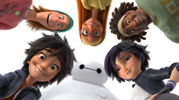

Big Hero 6 / Місто Героїв
Про фільм
«Місто героїв»(англ. Big Hero 6; букв. Укр. Велика шістка героїв) - американський трьохвимірний комп'ютерний повнометражний анімаційний фільм 2014 року, створений студією «Walt Disney Animation Studios» і випущений кінокомпанією «Walt Disney Pictures». Заснований на однойменних персонажах коміксів видавництва Marvel, але, незважаючи на це, істотно відрізняється
від першоджерела. Режисери - Дон Холл і Кріс Вільямс. Фільм удостоївся премії «Оскар» як кращий анімаційний повнометражний фільм.
Члени команди «Місто героїв»
- Хіро Хамада [en] (англ. Hiro Hamada)- головний герой мультфільму. Юний геній робототехніки.У вільний час він конструює бойових роботів і виставляє їх на підпільних боях в Сан-Франсокіо.
- Беймакс [en] (англ. Baymax)- другий головний герой мультфільму. Надувний медичний робот, сконструйований Тадаші.
- Гого Томаго [en] (англ. GoGo Tomago)- Гого Томаго обожнює швидкість. Вона відмінно складена, завжди зібрана і дуже віддана команді.
- Хані Лемон [en] (англ. Honey Lemon)- у хіміка-аматора Хані Лемон все йде на лад! За зовнішністю модниці в стильних окулярах стоїть цілеспрямована особа, девіз якої: «Неможливе можливо».
- Фред (Фредзілла) [en] (англ. Fred (Fredzilla))- на перший погляд може здатися, що тюхтій і фанат коміксів Фред - ледар без мети в житті. Він підробляє закликальником і «ходячою рекламою», однак цей хлопець просто чекає свого часу.
- Васабі [en] (англ. Wasabi)- прагне до абсолютної точності і повсюдного порядку здоровань Васабі не може відмовити Хіро в допомоги та приєднується до команди самопроголошених героїв.
Члени команди «Місто героїв»
- Хіро Хамада [en] (англ. Hiro Hamada)- головний герой мультфільму. Юний геній робототехніки.У вільний час він конструює бойових роботів і виставляє їх на підпільних боях в Сан-Франсокіо.
- Беймакс [en] (англ. Baymax)- другий головний герой мультфільму. Надувний медичний робот, сконструйований Тадаші.
- Гого Томаго [en] (англ. GoGo Tomago)- Гого Томаго обожнює швидкість. Вона відмінно складена, завжди зібрана і дуже віддана команді.
- Хані Лемон [en] (англ. Honey Lemon)- у хіміка-аматора Хані Лемон все йде на лад! За зовнішністю модниці в стильних окулярах стоїть цілеспрямована особа, девіз якої: «Неможливе можливо».
- Фред (Фредзілла) [en] (англ. Fred (Fredzilla))- на перший погляд може здатися, що тюхтій і фанат коміксів Фред - ледар без мети в житті. Він підробляє закликальником і «ходячою рекламою», однак цей хлопець просто чекає свого часу.
- Васабі [en] (англ. Wasabi)- прагне до абсолютної точності і повсюдного порядку здоровань Васабі не може відмовити Хіро в допомоги та приєднується до команди самопроголошених героїв.